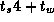
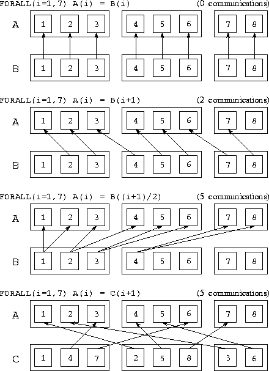

![[DBPP]](pictures//asm_color_tiny.gif)


![[Search]](pictures//search_motif.gif)
The performance of an HPF program depends not only on the skill of the programmer but also on the capabilities of the compiler, which in effect generates the actual parallel program from a high-level specification provided by the programmer. The structure and hence the performance of this program may not be intuitively obvious to the programmer. However, a good HPF compiler should provide feedback identifying hard-to-parallelize components, and of course intuition can be developed with experience.
Two major obstacles impact the efficient execution of an HPF program: sequential bottlenecks and excessive communication costs. In the following sections, we first examine the compilation process and then discuss these two obstacles in turn.
Compilers for HPF and related languages generally proceed roughly as follows. Data decomposition statements are analyzed to determine the decomposition of each array in a program. Computation is then partitioned across processors, typically (but not always) using the owner computes rule. This process allows nonlocal references, and hence communication requirements, to be identified. Communication operations are then optimized. In particular, an attempt is made to move messages out of loops so as to reduce communication costs.
As an illustration of how an HPF compiler operates, Program 7.6 gives the code that might be generated for Program 7.2. Recall that Program 7.2 implements a parallel algorithm based on a one-dimensional decomposition of a two-dimensional finite-difference problem and executes on four processors. The generated code is a mixture of F90 statements and calls to library routines that perform communication operations. In this example, two such routines are called: stencil_exchange_1d and reduce_real. The first routine exchanges data with the processors handling neighboring parts of the finite difference grid, and the second performs the reduction operation required to compute a maximum difference. These routines account for the communication requirements of the program.
In this example, communication costs are easy to determine. The nearest-neighbor exchange will send two messages having a total size of 200 words; the reduction will generate communications, each of size one word. Hence, total costs are  202. As in addition, this program decomposes computation evenly across processors, it can be expected to execute with reasonable efficiency.
A sequential bottleneck occurs when a code fragment does not incorporate sufficient parallelism or when parallelism exists (in the sense that data dependencies do not prevent concurrent execution) but cannot be detected by the compiler. In either case, the code fragment cannot be executed in parallel. Sequential bottlenecks of this sort may not be serious if a program is intended to execute on only a small number of processors, but they inevitably reduce a program's scalability. More precisely, if some fraction 1/s of a program's total execution time executes sequentially, then Amdahl's law applies, and the maximum possible speedup that can be achieved on a parallel computer is s (Section 3.2.1).
An HPF compiler should provide information about constructs that it was unable to parallelize. The programmer may then be able to restructure the code in question to enable parallelization.
We next discuss a number of issues that affect the communication performance of HPF programs.
Intrinsics. Many F90 and HPF intrinsic functions combine data from entire arrays (Table 7.1) and hence involve considerable communication if the arrays to which they are applied are distributed. For example, operations such as MAXVAL and SUM perform array reductions which, as noted in Chapter 2, can be performed in steps on P processors, for a total communication cost of . This cost is independent of the size of the arrays to be reduced. In contrast, the cost of a TRANSPOSE or MATMUL operation depends on both the size and distribution of the operation's arguments. Other operations such as DOT_PRODUCT involve communication only if their arguments are not aligned.
Array operations. Array assignments and FORALL statements can result in communication if, in order to compute some array element A(i), they require data values (e.g., B(j)) that are not on the same processor. Program 7.6 showed one example: the references X(i,j-1) and X(i,j+1) resulted in communication. The CSHIFT operation is another common source of communication.
Cyclic distributions will often result in more communication than will block distributions. However, by scattering the computational grid over available processors, they can produce better load balance in some applications. (Recall that this strategy was discussed in Section 2.5.1.)

Figure 7.9: Communication requirements of various FORALL
statements. The arrays A and B are aligned and distributed
in a blocked fashion on three processors, while the array C is
distributed in a cyclic fashion.
To help you develop intuition regarding communication costs, we present in Figure 7.9 the communication requirements associated with a number of different FORALL statements for three arrays A, B, and C distributed as follows.
!HPF$ PROCESSORS pr(3)integer A(8), B(8), C(8)
!HPF$ ALIGN B(:) WITH A(:)
!HPF$ DISTRIBUTE A(BLOCK) ONTO pr
!HPF$ DISTRIBUTE C(CYCLIC) ONTO pr
Different mappings. Even simple operations performed on nonaligned arrays can result in communication. For example, the assignment A=B can require considerable communication if arrays A and B have different distributions. The cost of this sort of communication must be weighed against the cost of converting to a common distribution before performing the operation.
Procedure boundaries. As discussed in Sections 4.2.1
and 7.5, switching from one decomposition of an array to
another at a procedure boundary can result in considerable
communication. Although the precise amount of communication required
depends on the decomposition, the total cost summed over
P
processors of moving between decompositions of an
M
 N
array will often be approximately S M N
, where S
is the size of an array element in
four-byte words. This cost arises because, generally, each of the
P
processors must communicate with every other processor,
and each M.N
array element must be communicated.
N
array will often be approximately S M N
, where S
is the size of an array element in
four-byte words. This cost arises because, generally, each of the
P
processors must communicate with every other processor,
and each M.N
array element must be communicated.
Compiler optimization. A good HPF compiler does not compile a program statement by statement. Instead, it seeks to reduce communication costs by combining communication operations and otherwise reorganizing program statements. In addition, it may choose to use data distributions different from those recommended by the programmer. Hence, it is always necessary to verify analytic results using instrumentation data.
© Copyright 1995 by Ian Foster